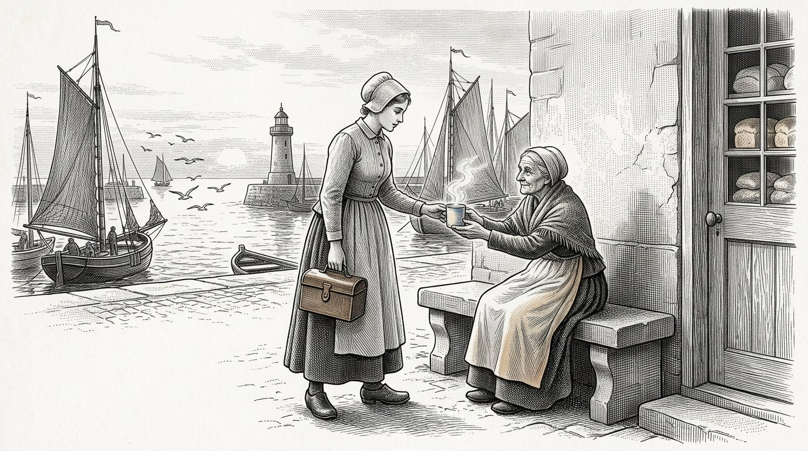
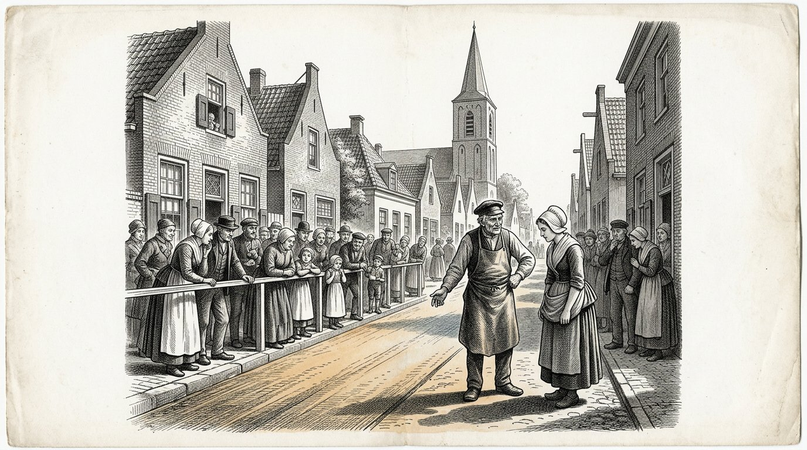

КНИГА ЧЕТВЁРТАЯ
Косарис
Книга гидролизата

КНИГА ЧЕТВЁРТАЯ
Книга гидролизата
Жидкость, которой никто не видел
Пролог — говорит Косус
Я — Косус. Когда вы откроете эту книгу, меня уже не будет среди вас. Я отдал её Алкион, чтобы она хранила её до тех пор, пока не настанет время, а Антея записала её вместе с нею.
В Книге Первой я дал вам четыре столпа и показал пять кораблей. Я рассказал вам о солнце на экваторе и о пробуждающейся принцессе. Эта четвёртая книга — об одной вещи, которая проходила между строк в других книгах, но так и не была записана: о жидкости, что выходит из травы, когда её холодно отжимают.
Мы называем её гидролизатом. Она не одна вещь, а многие вещи сразу. Она — топливо для вашей печи, когда газовые реки замерзают. Она — связующее для дорог, которые вы кладёте под ноги своих детей. Она — сырьё для пластика, который служит сто лет вместо пяти.
Она — один ответ на три вопроса, на которые вы до сих пор отвечали тремя разными линиями снабжения. Тот, кто отвечает на три вопроса одним ответом, не становится беднее, но становится менее зависимым. За того, кто зависим, решают. Тот, кто менее зависим, решает сам. Это не техника. Это суверенитет.
В Книге Первой я дал Алкион услышать бурю. Я дал Петросу прибыть к причалу. Я показал вам солнце на экваторе и корабль, идущий на собственном топливе. Эта четвёртая книга — приложение к тем рассказам. Тот, кто прочтёт её, узнает не только, что солнце работает. Он узнает и как.
И, что важнее, он узнает, почему это не работает без взаимности. Здесь тяжело лежит чаша весов Тимарис. Жидкость из травы другой страны — не нефть, которую вы покупаете. Это рукопожатие в стекле.
Косус говорит:то, что вы трижды покупаете у трёх разных господ, можно однажды построить с одним соседом. Первый путь делает вас зависимыми. Второй путь делает вас семьёй.
Якобус ван Меркстейн
Эта — четвёртая книга «Косариса». Она следует за Книгой Первой, где были положены четыре столпа и двенадцать частей провели мир от забытой гавани до выбора, оставленного читателю. Она стоит рядом с Книгой Второй, которая была о Диакрисисе — различении между тем, что установлено, и тем, что лишь принято. И рядом с Книгой Третьей, в которой Антея показала, как ребёнка готовят к самостоятельному суждению.
Эта четвёртая книга — о климате, но не так, как пишут о нём газеты. Она об одном веществе из одной травы, которое разом решает три проблемы: энергию, согревающую ваш дом, дорогу, по которой ваши дети ходят в школу, и пластик, в который завёрнуты их книги. Когда одно вещество разом решает три проблемы, меняется нечто большее, чем техника. Меняется тот, кто решает.
Персонажи не новы. Алкион вы знаете по Части VI Книги Первой, где она услышала бурю, которой не слышал никто другой. Петроса вы знаете по Части VIII, где он прибыл к причалу Мальты к старому Рыцарю. Демира, как всегда, стоит у своей печи. Антея уже стала взрослой, и именно она передаёт эту книгу из рук в руки.
Я назову одну вещь, которую газеты предпочитают обходить. Мы называем эту жидкость гидролизатом. Она приходит из гигантской травы по имени Жункао и из дерева по имени Моринга. Её получают холодным отжимом, не нагреванием и не брожением. Она приходит из земли, не ломая землю. И она приходит от солнца на экваторе, где оно есть и где остаётся.
Тот, кто прочтёт эту книгу и даст прочесть её министру, не изменит министра. Тот, кто прочтёт её своему соседу, возможно, изменит деревню. Как всегда в этих книгах: сила — в передаче, а не в убеждении того, кто хочет остаться глухим.
Мальта, ноябрь 2026 года.
Часть 1

В которой Алкион возвращается в гавань, Демира учит её тому, что выходит из гигантской травы, и отжимают первую бутылку гидролизата.

Алкион исполнилось двадцать шесть лет. Шесть летних сезонов она работала на плантациях Жункао на юге и вернулась домой зимой, потому что Косус написал ей, что хочет кое-что показать. Когда она прибыла, его уже не было у причала. Он умер тремя неделями раньше, и Демира не смогла дать ей знать, потому что письмо ушло слишком поздно.
В первое утро после приезда она сидела на скамье у пекарни и смотрела на гавань. Демира вышла с чашкой тёплого молока и сказала: он оставил мне кое-что для тебя. Это в задней части пекарни.
Алкион пошла за нею внутрь. В задней комнате стоял деревянный ящик, а на нём лежало письмо. Письмо было написано рукой Косуса. Там стояло: «Алкион, шесть лет на юге ты училась тому, на что способна трава. Теперь пора узнать, что такое трава. Открой этот ящик, когда душа твоя будет спокойна».
Алкион открыла ящик. В нём лежал деревянный винтовой пресс, маленький, но тяжёлый, такого размера, какой прежде употребляли для винограда. И пустая стеклянная бутылка. И тетрадь в кожаном переплёте. На первой странице рукой Косуса было написано: «Гидролизат».
Алкион читала страницы. Она читала медленно, ибо Косус писал так, как говорил, и она снова слышала его голос. Он записал, как холодно отжимать траву, не прибегая к теплу, которое ломает сладость. Он записал, какие растения сажать между нею, чтобы трава питала себя сама и жидкость оставалась чистой. Он записал, что получается: жидкость, которая горит без дыма, твердеет без цемента, принимает форму без литья.
Алкион закрыла тетрадь. Она посмотрела на Демиру. «Это не одна вещь. Это сразу три вещи». Демира сказала: «Именно это он сказал мне за четыре вечера до смерти. Он сказал: если нечто есть одна вещь, делающая сразу три дела, это не техника. Это ключ».
Алкион положила письмо обратно на ящик. Она сказала Демире: «Тогда завтра я начну отжимать».
Косус говорит:тот, кто наследует ключ, не наследует замок. Он наследует обязанность искать, какие двери в его время открылись, а какие остались закрытыми.

Демира думала, что отжим будет похож на виноградный пресс. Алкион объяснила, что это иначе. Виноград отжимают, чтобы извлечь сок. Жункао отжимают, чтобы разъять его строение, не разрушая его. Если отжимать слишком тепло, жидкость окисляется, и вы теряете половину. Если отжимать слишком холодно, ничего не выйдет. Температура должна быть как в тёплое летнее утро.
Они уложили траву в пресс, как было сказано в тетради: сперва размяли между двумя полотнами, затем проложили слоями с горстью листьев Моринги из сушёного пучка, оставленного Косусом. Моринга делала то, чего без неё не понять: держала частицы порознь. Без Моринги они слипались, и жидкость мутнела. С Морингой она оставалась прозрачной, как янтарь.
Они закрутили винт. Прошёл час, прежде чем появилась первая капля. Ещё через час в стекло потекла тонкая струйка. К концу дня у них была половина бутылки.
Демира спросила: «И это всё?» Алкион ответила: «Это из горсти. Если отжать тюк, получится пол-литра. Если отжать полный сарай — сто литров. Если отжать поле — три тысячи».
Демира посмотрела на бутылку. «В чём она горит?» Алкион сказала: «Пока ни в чём из того, что у нас есть. Мне нужно построить печь, которой подходит эта жидкость. Сорок лет мы строили печи, которым подходит газ и уголь. Этой жидкости нужна собственная печь. Это будет на следующей неделе».
Демира спросила: «А остальное?» Алкион сказала: «Вот первое». Она подняла бутылку к свету и увидела, как в жидкости переливаются оттенки — от жёлтого к янтарному, почти к синему, когда свет падал под углом. Она сказала: «Косус говорил, что тот, кто впервые видит эту жидкость, должен молчать три вдоха». Они молчали три вдоха.
Тогда Демира сказала: «В жизни я видела, как хлеб выходит из теста, а дети — из женщин. Это третья вещь, которая приводит меня в изумление».
Косус говорит:то, что холодно сделано из того, что растёт, хранит силу выросшего. То, что сделано горячо, теряет половину того, чем было. Тот, кто делает холодно, удерживает солнце. Тот, кто делает горячо, растрачивает его.

На второй день пришла посмотреть соседка Демиры. Её звали Марта, она не пекла хлеб, а продавала овощи на рынке. У неё было четверо детей, и она привыкла иметь мнение обо всём.
Марта увидела пресс и бутылку и сказала: «Что это за кабак ты тут устраиваешь?» Демира ответила: «Это не кабак. Это жидкость, которая горит, связывает и принимает форму». Марта сказала: «Если она горит, связывает и принимает форму, это не жидкость, а ложь».
Алкион ничего не сказала. Она взяла ложку жидкости и налила её в блюдце. Взяла со стола свечу и поднесла пламя к блюдцу. Жидкость вспыхнула. Она горела ровным голубым огнём, без дыма, и отдавала тепло, которое чувствовалось лицом на расстоянии ладони.
Марта сказала: «Это можжевеловка». Алкион ответила: «Попробуй». Марта не решилась. Алкион окунула палец в блюдце и лизнула. «На вкус — ничто. Можжевеловка имеет вкус можжевеловки. А это на вкус, как вода: никак».
Марта сказала: «Тогда это масло». Алкион сказала: «Масло пахнет. А это — нет. Понюхай». Марта понюхала. «Верно, оно не пахнет».
Марта села на скамью. «Что же это?» Алкион сказала: «Это то, что есть в траве и строит траву. Теперь мы извлекли это, не нагревая. Оно древнее. Оно есть в каждом растении. Мы никогда не спрашивали, хочет ли оно выйти и без того, чтобы мы стали его варить».
Марта задумалась. «А сама трава? Она остаётся?» Алкион ответила: «После отжима трава идёт на корм коровам. То, что остаётся после корма, запахивают обратно в поле, где трава росла. Ничего не уходит. Корова ест это, а земля получает назад. Мы берём только жидкость — и именно из неё здесь делаем своё».
Марта встала. «Если то, что вы говорите, верно, значит, мы сорок лет не думали». Демира сказала: «Именно это сказал бы Косус». Марта спросила: «А где теперь Косус?» Демира ответила: «Умер». Марта сказала: «Жаль. Я хотела спросить его, почему он не рассказал нам об этом тридцать лет назад».
Алкион сказала: «Он рассказывал. Мы не слушали. Это другое».
Косус говорит:тот, кто не верит в новое вещество, потому что никогда о нём не слышал, не верил бы и в огонь, в пиво или в яйца, пока не увидел бы их впервые. Разница между неверием и незнанием — одна демонстрация на скамье у пекарни.

Той ночью Алкион продолжила читать тетрадь Косуса. Она читала при лампе, горевшей на самой жидкости, которую налила в старую масляную лампу. Лампа горела ярче привычных ей масляных ламп и без сладкого дыма.
Косус написал шесть страниц о том, что называл гидролизатом. Первая страница была о том, как его отжимать. Вторая — о том, что из него делают. Третья — о том, чего делать не следует. Четвёртая — о партнёрах на экваторе. Пятая — о живой изгороди из колючек вокруг управителей. Шестая была письмом, начинавшимся так: «Тому, кто получит это после меня».
На третьей странице, о том, чего делать не следует, стояло: не нагревайте жидкость до этанола, если только не находитесь в нужде. Этанол — промежуточная ступень, сводящая всё к топливу. Когда вы делаете этанол, вы теряете то, что делает жидкость особенной: её многосторонность. Тогда вы можете только топить. Вы уже не можете связывать или формовать.
Алкион положила тетрадь. Она поняла, что он имел в виду. Поспешный путь сквозь кризис — делать этанол и быстро сжигать его в старых двигателях. Медленный путь — узнать, что такое сама жидкость, и строить с нею. Поспешный путь попадёт в газеты. Медленный путь попадёт в век.
Она перешла к пятой странице, о колючей изгороди. Косус написал: тот, кто попытается провести эту жидкость через Брюссель как топливо, получит отказ, потому что она не подходит к существующим категориям. Тот, кто попробует провести её как связующее, получит отказ, потому что для неё нет проверки. Того, кто попытается провести её как сырьё для пластика, высмеют, потому что пластик плох. Того, кто пытается провести её сразу через все три двери, отошлют трое чиновников, каждый со своим досье и не говорящий с другими.
Ниже Косус написал: что делать? Обойдите изгородь. Сначала стройте в деревне. Дайте этому работать. Когда так сделают сто деревень, изгородь придёт к вам. Не ждите её. Сама она не приходит.
Алкион закрыла тетрадь. Она подумала: «Вот что я сделаю. Деревня за деревней».
Косус говорит:тетрадь, унаследованная от учителя, — не Библия. Это путеводитель. Тот, кто читает путеводитель, но не путешествует, не имеет ничего. Тот, кто путешествует без путеводителя, заблудится. Тот, кто читает и путешествует одновременно, прибывает.
Часть II
Часть 2

В которой Алкион строит печь, подходящую гидролизату, деревня остаётся тёплой всю зиму, не спрашивая газовые реки, а мэр узнаёт разницу между дешевле и сувереннее.

Алкион нашла старого кузнеца на другом конце деревни. Его звали Вильм, и пять лет как он был на пенсии. В его сарае стояли три печи, которые он так и не продал, потому что люди уже перешли на газ.
Она сказала ему: «У меня есть жидкость, которая горит без дыма». Вильм сказал: «Тогда ваша жидкость лучше моих печей». Она сказала: «Ваши печи были построены для масла. Я хочу переделать одну для этой жидкости». Вильм сказал: «Покажите».
Она принесла ему бутылку. Налила ложку в блюдце и подожгла. Вильм посмотрел на голубое пламя и замолчал. Потом сказал: «У этого пламени температура хорошего угля. Но оно не стремится оставаться внизу, оставляя воздух над собой холодным. Оно одинаково греет сверху и снизу. Это другое».
Алкион спросила: «Что это значит для вашей печи?» Вильм ответил: «Это значит, что дымоход можно сделать меньше. Топочное отверстие — больше. Тепловую камеру — глубже, потому что пламя не душит само себя. За три недели я могу сделать одну. Хотите?»
Алкион сказала: «Хочу десять». Вильм спросил: «Что вы будете делать с десятью?» Алкион ответила: «Девять соседей и Демира. Если у Демиры всё заработает и девять соседей увидят это, к концу зимы у нас будет сто заказов. И тогда у нас будет деревня, стоящая на этой жидкости».
Вильм задумался. «А сама жидкость? Сколько у вас её?» Алкион сказала: «Сейчас бутылка. В следующем году — сарай. Через три года — поле». Вильм сказал: «Тогда этой зимой я сделаю вам три, а семь — следующей. Печь не может требовать того, чего у вас ещё нет».
Алкион кивнула. «Вы первый, кого я встретила, кто не хочет делать больше печей, чем есть жидкости». Вильм сказал: «Я стар. Мне больше не хочется делать то, что нельзя топить. Тридцать лет я делал это с углём. Теперь хочу делать только то, что горит».
Косус говорит:ремесленник, состарившийся и сохранивший свою мудрость, знает, что бессмысленно делать больше, чем будет употреблено. Молодой ремесленник с той же мудростью — редкость. Найдите его. Скажите ему, что вы его узнали.

Три печи были установлены к зиме. Одна у Демиры, одна у Марты, одна у самого Вильма в его сарае. Всех троих Алкион снабдила жидкостью, отжатой тем летом с поля за деревней, где она посадила Жункао с разрешения мэра.
Зима пришла рано. В ноябре выпал снег, а цена на газ выросла, как вырастала каждый год, когда на востоке или юго-востоке происходило нечто, о чём никто толком не знал. Соседи Демиры жаловались ей на счёт. Демира сказала: «Приходите ко мне, посидите в тепле».
Они пришли. Они сидели в пекарне, которая уже не работала на газе. Смотрели на печь, не похожую на их печи. Спросили: «Сколько это вам стоит?» Демира сказала: «Мне это стоит травы, которую мы выращиваем здесь у порога. Полутора недель отжима в конце лета. Одной печи, купленной один раз и служащей двадцать пять лет. А в остальном не стоит мне ничего».
Соседи спросили: «А счёт?» Демира ответила: «Счёта нет. Нет поставщика, который мне звонит. Нет цены, меняющейся, когда что-то случается за границей. Есть бутылка, которую я отжала сама. Когда она пустеет, я отжимаю новую».
Соседи задумались. «А нам можно такие печи?» Демира сказала: «Вильм делает семь на следующий год. Если запишетесь сейчас, попадёте в список». Они записались. За два дня все семь печей были заказаны.
В первый день Рождества в пекарне Демиры сидели тринадцать человек, потому что дома у них было слишком холодно и они больше не хотели платить то, чего требовал от них газовый счёт. Демира дала им хлеб и сказала: «В следующем году вы будете сидеть дома». Они ответили: «В следующем году будем сидеть дома».
Алкион сидела на скамье и наблюдала. Она подумала: «Тринадцать человек. Это деревня. Это треть жителей. Этого достаточно, чтобы убедить мэра: что-то должно измениться».
Косус говорит:первая зима, когда деревня греет себя сама, не завися от рек, которыми не владеет, — первая зима, в которую жители этой деревни сами решают, что значит Рождество. Во все прежние зимы за них решали люди, которых они не знали.

Мэр пришёл к Демире в январе. Это был тот же мэр, который в Книге Первой узнал, что счёт, упавший на пекаря, — гроб. Он стал старше, плечи его немного подались вперёд, но глаза оставались такими же острыми.
Он сказал: «Демира, я слышал, что на Рождество у вас дома было тринадцать человек». Демира сказала: «Шестнадцать, если считать детей». Мэр спросил: «Почему?» Демира ответила: «Потому что моя печь была тёплой, а их — нет».
Мэр сказал: «Это похвальный поступок. Но для меня это и проблема. Если двадцать три семьи покинут деревню, потому что не смогут оплатить газовый счёт, я потеряю налоговые поступления. Если двадцать две семьи останутся, потому что вы их кормите, я тоже потеряю налоговые поступления, ведь за газ они всё равно не платят».
Демира сказала: «Тогда вы пришли ко мне за решением, а не с жалобой». Мэр ответил: «Именно поэтому я здесь. Каково ваше решение?»
Демира позвала Алкион. Алкион объяснила: «Если вы переведёте на эту жидкость сто семей, их общий зимний счёт будет равен нулю. Трава растёт на земле, которую вы сдаёте нам в аренду. Аренда — ваш налоговый доход. Пресс стоит в общинном доме, которым владеете вы. Аренда пресса — ваш налоговый доход. Печи Вильм делает здесь, и Вильм платит налог со своего оборота».
Мэр сказал: «Значит, вы заменяете газовый счёт арендой земли, арендой пресса и местным оборотом». Алкион сказала: «И тремя вещами, которых в газовом счёте не было. Мы оставляем деньги в деревне. Мы отвязываемся от колебаний цен. И у нас есть работа для семи человек, у которых иначе работы нет».
Мэр задумался. «Во что мне обойдётся запуск?» Алкион ответила: «В один сезон земли, которую вы дадите нам в пользование, и одно помещение в общинном доме. Не больше».
Мэр спросил: «А сколько это мне принесёт?» Алкион ответила: «Я не могу сказать вам это цифрами. Но могу взвесить на других весах. Ваша деревня больше не сжимается. Молодые остаются. Старики не умирают от холода. А завод вдали, который даёт вам электричество, может просить с вас что угодно — вы не будете зависимы».
Мэр посмотрел на Алкион и сказал: «Двадцать лет назад я научился этому у Демиры: весы, что кажутся лучшими количественно, не всегда те, что несут деревню. Я принимаю предложение».
Косус говорит:мэр, который взвешивает деревню по тому, сколько денег она приносит, упускает то, чем деревня является. Мэр, который взвешивает деревню по тому, что она несёт, взвешивает чашей Тимарис. Такие весы не ломаются в непогоду.
Часть III
Часть 3

В которой жидкость не только горит, но и связывает, а провинциальный чиновник узнаёт, что дорога — нечто большее, чем поставщик её асфальта.

Вильм однажды после полудня пришёл в пекарню и положил на прилавок комок, который держал в руке. Он сказал Алкион: «Это твоя жидкость, смешанная с каменной крошкой и оставленная на три дня. Я подумал: если она горит, что она делает, когда не горит?»
Алкион взяла комок. Он был твёрд, как камень. Она уронила его на пол. Он не разбился. «Как вы это сделали?» Вильм ответил: «Я смешал жидкость с дроблёным гранитом из моего сада и каплей кислоты из аккумулятора. Положил в жестяную банку и оставил на три дня снаружи. Вот что вышло».
Алкион повернула комок в руках. «Это полимерный бетон без цемента». Вильм сказал: «Я не знаю, что это. Я знаю, что оно твёрдое и не ломается».
Алкион вернулась к тетради Косуса. На второй странице, о том, что из неё делают, он написал: гидролизат — не одна вещь. Это семья. Когда вы подкисляете его и он встречает минералы, он становится связующим. Когда вы подкисляете его горячим, он становится смолой. Когда смешиваете его с растительным волокном и сушите, он становится материалом легче дерева и прочнее его.
Алкион снова прочла это Вильму. Вильм сказал: «Ваш учитель был умнее, чем я думал. Я случайно сделал то, что он записал намеренно».
Алкион ответила: «Это не случайность. Так поступает старый ремесленник, встретивший новое вещество. Он не спрашивает его, что оно такое. Он смешивает его с тем, что знает, и смотрит, что получится. Это кратчайший путь».
Вильм спросил: «И что теперь?» Алкион сказала: «Теперь мы строим дорогу».
Косус говорит:ремесленник, смешивающий свои вещи с тем, что получает, не спрашивая сперва, что это такое, быстрее открывает работающее, чем учёный, который прежде читает руководство. Нужны оба. Тот, кто примиряет обоих, строит.

Мэр согласился заменить участок деревенской дороги. Это была полоса в триста метров между общинным домом и церковью. Её заасфальтировали одиннадцать лет назад, и асфальт уже трескался.
Алкион и Вильм сами сделали новое покрытие. Они использовали шесть бочек гидролизата, три тонны мелко дроблёного базальта из выработанного карьера и ведро лимонной кислоты от травника. Всё смешали в старой бетономешалке и вылили на подготовленное основание.
Смесь отвердела за три дня. Когда всё было готово, дорога стала охристо-жёлтой, с синеватым блеском, когда свет падал сверху. Она была глаже асфальта и под ногой казалась чуть холоднее.
Жители деревни пришли посмотреть. Прошли по ней. Сказали: «Красивый цвет». Сказали: «Она гладкая». Спросили: «Как долго она прослужит?»
Алкион ответила: «Мы не знаем. Думаем, тридцать лет. Может быть, пятьдесят. Асфальт рядом прослужил одиннадцать лет. Если эта дорога прослужит двадцать, она дешевле асфальта. Если тридцать — вдвое дешевле. Если пятьдесят — мы положили дорогу, которой ещё будут пользоваться наши внуки».
Мэр прошёл дорогу. «А ремонт?» Алкион сказала: «Та же жидкость и та же крошка. Мы смешаем их и зальём в трещину. Она свяжется со старой дорогой, потому что это то же вещество. С асфальтом приходится переделывать весь участок».
Мэр спросил: «А цвет?» Алкион ответила: «Цвет идёт от Моринги. Мы можем изменить его, добавляя другие пигменты. То, что вы видите, — природный цвет. За десять лет он немного окислится и станет коричневее. Кому-то это нравится. Кому-то — нет».
Мэр спросил: «А счёт? Сколько стоит метр?» Алкион сказала: «Меньше метра асфальта, пока мы делаем жидкость сами, а крошка приходит местная. Если отдать это подрядчику, которому надо брать всё с завода, будет вдвое дороже. Если делать самим вместе с людьми, уже отжимающими жидкость, это дёшево».
Мэр записал это. «Я поеду в провинцию».
Косус говорит:дорога, уложенная самой деревней, — не только дорога. Это перечень людей, знающих, как она уложена. Когда она треснет, деревня знает, как её починить. Тот, кто отдаёт дорогу на сторону, теряет вместе с нею и знание.

Мэр взял Алкион с собой в провинцию. Они говорили с чиновником, отвечавшим за инфраструктуру. Его звали Ван Даэл. Он был строг, тщателен и не плох.
Ван Даэл сказал: «Покажите, что у вас есть». Алкион положила на его стол образцы дороги. Показала, как твёрдо связующее. Показала чертежи, сделанные по тетради. Объяснила, какая трава растёт и как её отжимают.
Ван Даэл сказал: «Это интересно. Но я не могу одобрить дорогу, не попадающую в существующие категории. У нас есть нормы для асфальта и нормы для бетона. Ваша дорога — ни то ни другое».
Алкион спросила: «Какой из ваших норм мне позволено попробовать соответствовать?» Ван Даэл сказал: «Никакой. Ваш материал не подходит к обеим категориям, потому что испытания работают иначе. Я не могу его аттестовать».
Алкион сказала: «Значит, вы можете меня запретить». Ван Даэл ответил: «Не запретить. Я не могу вас аттестовать. Это другое. Вы можете экспериментировать на собственной деревенской земле. Нельзя лишь регистрировать эту дорогу как провинциальную».
Алкион задумалась. «Это именно то, что нам нужно. Мы не хотим быть провинциальной дорогой. Мы хотим быть сотней работающих деревенских дорог. Когда будут работать сто деревенских дорог, возможно, найдётся кто-то, кто создаст новую категорию. До тех пор мы делаем это вне вашего досье».
Ван Даэл посмотрел на неё. «Вы умны». Алкион сказала: «У меня был учитель, который мне это объяснил. Он говорил: управители всегда приходят сзади. Не ждите их. Сначала стройте».
Ван Даэл сказал: «Я не знаю этого учителя, но он был прав. И потому, что он был прав, я сделаю следующее. Я не буду беспокоить вашу деревню. Я также промолчу перед другими чиновниками, которые захотели бы вас беспокоить. Когда у вас будет десять деревень, вернитесь. Тогда нам, возможно, будет о чём поговорить».
Алкион кивнула. «Я вернусь, когда у нас будет десять деревень». Ван Даэл сказал: «А до тех пор держите голову ниже. В Брюсселе есть чиновники, которые машут кулаками вокруг себя лишь потому, что слишком долго было тихо. Не становитесь мишенью».
Она вышла из комнаты. В коридоре мэр сказал: «Он оказался проще, чем я думал». Алкион ответила: «Он оказался проще, потому что знает, что неправ. Чиновникам, знающим, что они неправы, можно помочь. Чиновникам, считающим себя правыми, помочь нельзя. Нам повезло».
Косус говорит:чиновник, который не может вас аттестовать, но и не тревожит вас, — союзник, которого вы не можете назвать союзником. Берегите его, не ставя в неловкое положение. Когда он позже понадобится, он будет рядом.
Часть IV
Часть 4

В которой Алкион вызывают в Брюссель, она открывает, что колючая изгородь существует на самом деле, и узнаёт: кто не может пройти сквозь неё, может пройти вокруг.

Через три года в деревне было семь печей, триста метров дороги и четырнадцать соседних деревень, начинавших делать то же самое. Тем временем Алкион шесть раз переписала тетрадь Косуса и отдала её шести другим деревенским лидерам.
На третью весну пришло письмо из Брюсселя. Его написал советник комиссара. Там было сказано: «Уважаемая госпожа, нам стало известно, что вы используете для инфраструктуры неклассифицированный материал, нарушая руководства по патентованным строительным материалам. Просим вас в течение тридцати дней явиться в наше ведомство для дачи объяснений».
Алкион прочла письмо. Прочла снова. Она спросила себя, что такое патентованные строительные материалы, что такое это руководство и обязана ли она ему следовать.
Она пошла к Демире. Демира сказала: «Не ходи». Алкион сказала: «Если не пойду я, придёт судебный пристав». Демира сказала: «Пусть приходит». Алкион сказала: «Тогда мне всё равно надо идти». Демира сказала: «Тогда иди, но не одна. Я пойду с тобой».
Они вместе поехали в Брюссель. В поезде Алкион спросила: «Что, по-вашему, случится?» Демира ответила: «Они попытаются нас запугать. Скажут, что мы получим штраф, если не остановимся. Не скажут, что мы делаем неправильно, потому что мы не делаем ничего неправильного. Скажут, что мы не подходим к категориям. Потом попросят нас остановиться».
Алкион спросила: «А что мне сказать?» Демира ответила: «Что вы не подходите к их категориям. И что вы не станете останавливаться, потому что не останавливают то, что работает, лишь оттого, что это не умещается в досье. И что вы едете домой. Этого достаточно».
Алкион спросила: «А если они подадут на меня в суд?» Демира сказала: «Тогда это будет их первое дело о материале, которого они сами не понимают. Это станет их проблемой, не нашей. И нашей первой известностью, пришедшей не от нас самих. Это полезно».
Косус говорит:письмо из Брюсселя обычно не приказ. Это испытание. Тот, кто отвечает так, как от него ожидают, подтверждает изгородь. Тот, кто отвечает не так, как от него ожидают, обходит её. Оба ответа допустимы. Но лишь второй ведёт куда-то.

Они прибыли к большому зданию. Алкион ожидала увидеть колючки, как написал Косус. Она удивилась: здание выглядело как любой другой бюрократический дворец — высокие окна, строгие коридоры, портреты на стенах людей, которых никто не знал.
Их принял советник, написавший письмо. Он был молод, вежлив и носил слишком хорошо сидевший на нём костюм. Он отвёл их в переговорную, где ждали ещё трое.
Они представились. Первый был от инфраструктуры. Второй — от материалов. Третий — от климата. Четвёртый, ведший разговор, — от соблюдения норм.
Соблюдение норм сказал: «Госпожа Алкион, вы используете в дорогах неутверждённый материал». Алкион сказала: «Мы не просили утверждения». Соблюдение норм сказал: «Вот в этом и проблема». Алкион ответила: «Это не моя проблема. Мы строим на деревенской земле деревенскими средствами. Нет закона, который велит просить утверждения для того, что мы строим на собственной земле».
Инфраструктура сказал: «Но существует руководство». Алкион спросила: «Какое руководство?» Инфраструктура ответил: «Руководство 2019/384 о единообразных материалах для дорожного строительства». Алкион сказала: «Прочтите, пожалуйста, место, которое относится к нам». Инфраструктура полистал свои бумаги. «Это большое руководство». Алкион повторила: «Прочтите место, которое относится к нам».
Инфраструктура сказал: «В таком масштабе руководство не обязательно». Алкион сказала: «Спасибо. Значит, мы действуем в рамках закона».
Материалы сказал: «Но вашего материала нет в нашем реестре». Алкион ответила: «Это деревенский материал. Ему не нужно быть в вашем реестре». Материалы сказал: «Когда вы начнёте расширяться, нужно будет». Алкион сказала: «Верно. Давайте договоримся: когда мы расширимся, мы его зарегистрируем?» Материалы сказал: «Это кажется разумным». Алкион сказала: «Тогда мы согласны».
Климат спросил: «А климатическое заявление?» Алкион сказала: «Какое заявление?» Климат ответил: «Вы заявляете, что ваш материал лучше для климата». Алкион сказала: «Мы этого не заявляем. Мы заявляем, что он работает, что он местный и что он не требует газа. Если кто-то выводит отсюда климатическое заявление — это его слова, не наши».
Климат спросил: «Но вы ведь пользуетесь климатическими субсидиями?» Алкион ответила: «Нет. Мы не просим субсидий. Мы деревня, которая греет себя сама. Без субсидий».
Наступила тишина. Соблюдение норм посмотрел на троих других. «У меня нет дела». Трое кивнули.
Алкион сказала: «Спасибо за ваше время. Я еду домой». Она встала. Демира встала. Они вышли. На улице Демира сказала: «Это было легче, чем я думала». Алкион ответила: «Потому что власть у них только над теми, кто чего-то от них хочет. Тех, кто ничего от них не хочет, они не могут удержать. Вот так мы обошли колючую изгородь, не коснувшись её».
Косус говорит:тот, кто чего-то хочет от управителей, управляется ими. Тот, кто ничего от них не хочет, остаётся ими без внимания или встречает уважение. И то и другое лучше, чем быть управляемым. Поэтому выберите, чего вы не хотите от них получить. Это первая половина вашей свободы.

Они шли по коридору к выходу. Молодой советник, встретивший их, поспешил за ними. Он сказал: «Госпожа, можно спросить вас кое о чём вне заседания?»
Алкион остановилась. Советник сказал: «Я прочитал письмо из вашей деревни до того, как вас пригласил. Я также погуглил ваше имя. Прочёл о том, что вы делаете. Я не хотел вас приглашать. Меня заставил начальник».
Алкион спросила: «И теперь?» Советник ответил: «Теперь я хочу вам кое-что сказать. В этом здании есть три рода людей. Первый любит колючую изгородь, потому что она защищает их существование. Второй ненавидит изгородь, но не осмеливается прогрызть её. Третий обходит её, как вы. Я принадлежу ко второму роду, но хотел бы принадлежать к третьему».
Алкион спросила: «Зачем вы мне это говорите?» Советник ответил: «Потому что хочу спросить, могу ли я помогать вам так, чтобы мой начальник не заметил».
Алкион задумалась. «Как вы можете нам помочь?» Советник ответил: «Говорить вам, когда появятся новые руководства, которые могут вас затронуть. Помогать читать их так, чтобы вы понимали, как в них не попадать. Называть коллег из других директоратов, настроенных благожелательно».
Алкион спросила: «А чего вы хотите взамен?» Советник ответил: «Чтобы моё имя нигде не появилось. Чтобы вы записали меня под именем, которое не моё. И чтобы, когда через пятнадцать лет изгородь падёт, вы дали кому-то из моего поколения достойное дело. Мы тогда останемся без работы и не будем знать, чего ещё стоим».
Алкион сказала: «Ваше имя появится в моей книге без вашего имени. И через пятнадцать лет вы окажетесь в списке людей, которым есть что делать. Я обещаю».
Советник сказал: «Спасибо». Он дал ей маленькую бумажку с адресом электронной почты и именем, которое не было его собственным. Он сказал: «Пользуйтесь этим только при конкретной проблеме. Не для поддержания связи. Я сам буду держать вас в курсе».
Они пошли дальше. На улице Демира сказала: «Он был добр». Алкион ответила: «Он был больше чем добр. Он был наполовину предателем в собственном доме — в нашу пользу. Это самый редкий союзник, которого можно иметь. Берегите его лучше, чем своих людей».
Косус говорит:в каждом доме изгороди есть тот, кто ненавидит изгородь. Это не тот, кто высказывается. Это тот, кто обращается к вам в коридоре, когда никто не видит. Тот, кто научится узнавать таких людей, всегда найдёт внутри изгороди открытую дверь.
Часть V
Часть 5

В которой Петрос через двадцать лет возвращается к причалу, Алкион передаёт ему тетрадь Косуса, а Антея закрывает книгу приглашением.

Петрос к тому времени стал тридцатишестилетним. Двадцать лет он жил на Мальте у старого Рыцаря, а после смерти Рыцаря четыре года путешествовал по странам на экваторе. Во вторник после полудня в сентябре он вернулся к причалу, куда когда-то прибыл мальчиком.
Алкион не сразу его узнала. Она увидела высокого худого мужчину с обветренным лицом; он сел на скамью у пекарни и смотрел на гавань так, как смотрит человек, не бывавший здесь шестнадцать лет и составляющий перечень перемен.
Она села рядом с ним. «Вы смотрите так, как смотрела я, впервые вернувшись с юга». Он взглянул на неё. «Алкион». «Петрос». Они молча сидели рядом. Потом он сказал: «Деревня уже не та, что была».
Алкион сказала: «Верно. Она теплее. Рядом с общинным домом есть мастерская, где работают шесть людей, у которых прежде не было работы. Дорога другая. Семь печей стали шестьюдесятью двумя, а четырнадцать соседних деревень — ста сорока».
Петрос спросил: «Откуда вы всё это взяли?» Алкион ответила: «Из ящика, который оставил мне Косус. И из травы. И из одного вещества, которое разом делает три вещи».
Петрос спросил: «А Рыцарь?» Алкион сказала: «Он умер, я знаю. А Мальта?» Петрос ответил: «Мальта совершила выход. Принцесса проснулась. Теперь у нас там есть то, что мы построили сами. Я вернулся, потому что должен закончить здесь то, что начал мальчиком».
Алкион спросила: «Что вы хотите закончить?» Петрос ответил: «Я хочу принять тетрадь Косуса». Алкион спросила: «Откуда вы знали, что есть тетрадь?» Петрос ответил: «Он показал её мне, когда я был мальчиком. Тогда он сказал: когда станешь достаточно взрослым, получишь её от того, кто получил её после меня».
Алкион сказала: «Тогда вы пришли вовремя. Мне сорок два, и я шесть раз переписала тетрадь. Если вы возьмёте седьмую копию, сможете начать в другом месте то, что я начала здесь».
Петрос спросил: «Где вы хотите, чтобы я начал?» Алкион ответила: «Это не мне решать. Это вам. Я отдаю вам тетрадь. Вы выбираете место».
Косус говорит:тетрадь, передаваемая от ученика к ученику, — больше, чем тетрадь. Это цепь. Каждое звено — жизнь. Тот, кто разрывает цепь, разрывает поколения. Тот, кто передаёт её, продлевает их.

Антея к тому времени стала тридцатипятилетней. Три года назад она приехала навестить бабушку Демиру и осталась. Она помогала Алкион записывать происходившее в деревне и сделала шестую копию тетради.
В вечер, когда вернулся Петрос, Алкион, Демира, Антея и Петрос сидели за столом в пекарне. Они ели хлеб и пили горячее вино. У Антеи была тетрадь, в которой она писала.
Демира спросила: «Что вы пишете, Антея?» Антея ответила: «Я записываю, что здесь происходит с возвращения Алкион. Я пишу это как продолжение книг, оставленных дедушкой Косусом. Думаю, это должна быть Книга Четвёртая».
Алкион спросила: «Почему?» Антея сказала: «Потому что Книга Первая дала четыре столпа. Книга Вторая дала Диакрисис. Книга Третья была моей собственной книгой о воспитании. Книга Четвёртая должна быть о том, что мы строим с травой и жидкостью. Иначе этого не поймут».
Петрос спросил: «Кто её издаст?» Антея ответила: «openvizier.org, как предыдущие три». Петрос спросил: «А кто будет читать?» Антея сказала: «Те же читатели, что читали прежние три. Некоторые поймут, некоторые сделают вид, что поняли. Самый важный читатель — четвёртый: тот, кто читает, делает что-то и передаёт это соседу. Для этого читателя мы пишем».
Алкион спросила: «А конец?» Антея сказала: «Конец в том, что вы отдаёте тетрадь Петросу, а Петрос начинает в другом месте. Это конец этой книги и начало следующей. Книгу Пятую должен будет написать Петрос, когда будет готов».
Петрос сказал: «Тогда я хочу попросить об одном. Я хочу, чтобы, когда я открою тетрадь в другом месте, это не было похоже на то, что сделали здесь. Я хочу начать там, где не знают, что такое гидролизат и что такое Жункао. Я хочу прибыть туда с ящиком, бутылкой и тетрадью, как Алкион прибыла сюда. Хочу увидеть, сработает ли это снова».
Алкион сказала: «Это снова сработает. Не потому, что трава волшебна, и не потому, что жидкость колдовская. Это работает, потому что верно. То, что верно, работает всюду, где кто-то хочет слушать».
Демира встала. Она взяла ящик, стоявший в глубине пекарни, и поставила его на стол. «Возьмите его с собой, Петрос». Алкион вынула тетрадь из ящика и отдала Петросу. «Это ваша копия. У меня их шесть. Я могу себе это позволить».
Петрос взял тетрадь. «Где мне начать?» Алкион ответила: «Там, где можно поставить бутылку на прилавок и дать троим людям посмотреть на пламя. Больше вам для начала не нужно».
Антея закрыла тетрадь. «Это Книга Четвёртая». Она сказала Петросу: «Берегите её. Когда начнёте, пусть один из ваших первых учеников напишет Книгу Пятую».
Косус говорит:книга, которую вы закрываете ключом в руке другого человека, — не законченная книга. Это начинающаяся книга. Настоящий читатель — тот, кто открывает её в месте, где ещё не бывал, и вписывает в неё нечто новое. Мы надеемся, что вы этот читатель.
Косарис — Книга четвёртая — Книга гидролизата.
Записано Антеей ван Меркстейн и Якобусом ван Меркстейном, инженером и издателем, живущими на Мальте и в Пальме. Издано на openvizier.org. Иллюстрации — чёрно-белые литографии с синими акцентами, в фирменном стиле Het Open Vizier.
«Тот, кто держит в руках жидкость, которая разом делает три вещи, держит не технику. Он держит ключ».